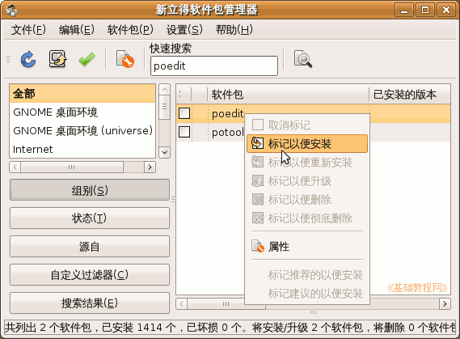
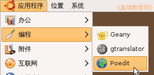
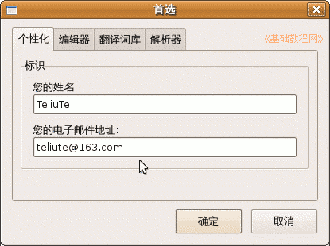
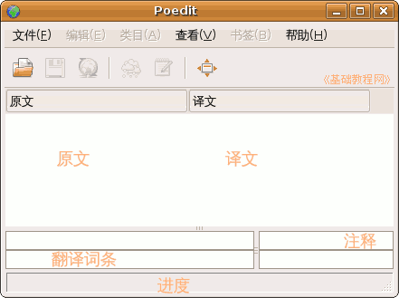
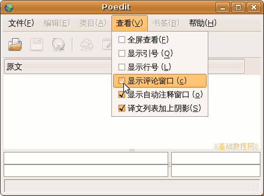
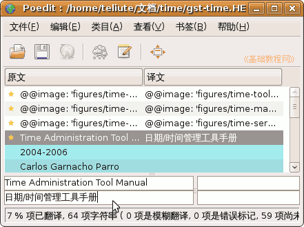
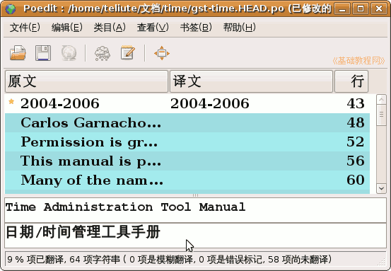

Poedit 基础教程
作者：TeliuTe 来源：基础教程网
Poedit 是编辑 po 文件的程序，使用它可以很方便地翻译软件，下面我们来看一个练习；
1、下载和安装
1）Windows 版华军下载地址：
下载以后，运行安装包，按提示一步一步直到完成；
2）Ubuntu 中可以在新立得中安装，进入后搜索 poedit，然后标记安装；

3）安装好以后，可以在应用程序菜单中找到，点击即可运行；

2、运行 Poedit
1）首次运行会出来一个对话框，输入自己邮件地址，这将用于标识翻译的信息；

2）Poedit 的窗口由三部分组成，上面是菜单工具栏，中间是原文，下边是翻译的词条；

3）注释一般不常用，可以点“查看”菜单，去掉勾不显示注释；

4）打开一个 po 文件后，窗口是这样的，在下边翻译，中间的文章一条一条往下走；

5）可以把窗口最大化，拖宽翻译窗口，也可以在菜单“文件-首选项-编辑器-字体”中，调大字体字号；

这里的字体分别用的是 Bitstream Vera Serif Bold 14 和 TlwgMono Bold 14
本节学习了安装和运行 Poedit 的基本方法，如果你成功地完成了练习，请继续学习下一课内容；
本教程由86团学校TeliuTe制作|著作权所有
基础教程网：http://teliute.org/
美丽的校园……
转载和引用本站内容，请保留作者和本站链接。